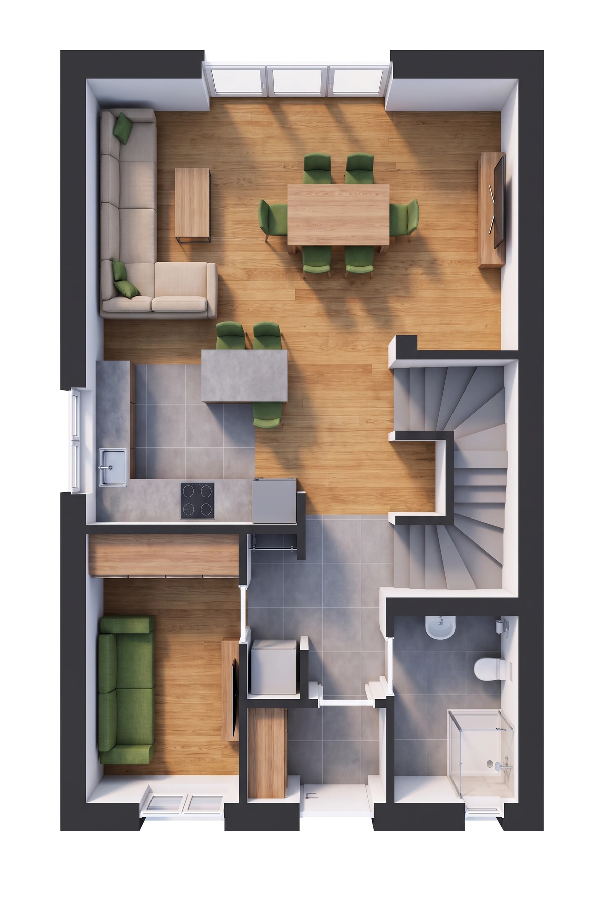

KAMIONKI / NOWY ADRES
Przestrzeń
bez kompromisów
Piętro bez skosów. Własny ogród. Twój dom.
Odkryj szczegóły ↓TWÓJ DOM / TWÓJ OGRÓD
Własne miejsce.
Twój rytm.
96,40 m² · 5 pokoi · działka ok. 320 m²
Poznaj inwestycję ↗Przewiń do szczegółów01 / MIEJSCE DO ŻYCIA
Twój rytm.
Własna przestrzeń.
Dom w zabudowie dwulokalowej w Kamionkach. Salon z aneksem kuchennym, dodatkowy pokój na parterze i trzy pokoje na piętrze bez skosów. Salon i taras skierowane na północny zachód.
INWESTYCJA W LICZBACH
Kamionki.
Wszystko pod ręką.
- Powierzchnia użytkowa
- 96,40 m²
- Działka lewego lokalu
- ok. 320 m²
- Liczba pokoi
- 5
- Termin oddania
- grudzień 2026
- Standard
- Stan deweloperski
- Ogrzewanie
- Pompa ciepła
Dodatkowo klatka schodowa: 4,40 m². Prawy lokal: 96,40 m², działka ok. 580 m², cena 769 000 zł. Dostępność i aktualne warunki potwierdź w biurze sprzedaży.

02 / STANDARD WYKONANIA
Komfort od
dobrych podstaw.
Konstrukcja i izolacja
Ceramika Porotherm 24 cm, ocieplenie styropianem 20 cm. Ławy żelbetowe, ściany fundamentowe z bloczków betonowych.
Okna i wykończenie
Okna PCV trzyszybowe, sześciokomorowe, antracyt od zewnątrz. Elektryczne rolety, betonowe schody i posadzki, tynki gipsowe maszynowe.
Instalacje
Pompa ciepła i ogrzewanie podłogowe w całym domu. Prąd, woda z sieci i kanalizacja. Przygotowane punkty wodno-kanalizacyjne bez przyborów.
Ogród i teren
Ogrodzenie boków, furtka i brama frontowa. Wyrównany teren oraz dojście z grafitowej kostki brukowej.
03 / UKŁAD DOMU
Każdy metr
ma znaczenie.

Parter
Zestawienie pomieszczeń
| Pomieszczenie | m² |
|---|---|
| Wiatrołap | 1,70 |
| Korytarz | 8,10 |
| Aneks kuchenny | 6,90 |
| Salon | 20,80 |
| Pokój | 8,70 |
| Łazienka | 3,80 |
| Pomieszczenie | m² |
|---|---|
| Łazienka | 5,90 |
| Korytarz | 5,70 |
| Pokój | 16,50 |
| Pokój | 10,80 |
| Pokój | 7,50 |
Wizualizacje 3D pokazują koncepcyjną aranżację prezentowanego lewego lokalu. Rzuty 2D pokazują prezentowany lewy lokal. Prezentowany lokal lewy ma układ lustrzany względem prawego. Zestawienie pomieszczeń pochodzi z oferty; suma podanych powierzchni wynosi 96,40 m², klatka schodowa 4,40 m² jest podana osobno.
ARCHITEKTURA / GALERIA
Z każdej
perspektywy.


Materiały z oferty źródłowej. Charakter i aktualny stan realizacji potwierdź w biurze sprzedaży.
POROZMAWIAJMY O TWOIM DOMU